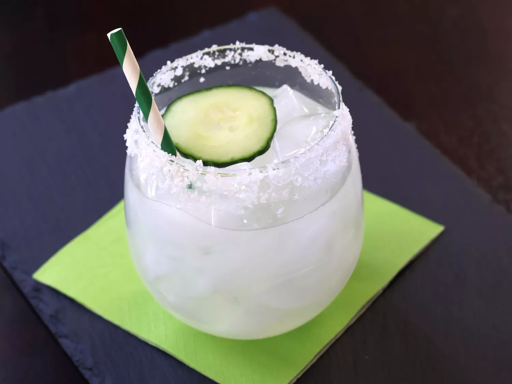

Cucumber Jalapeño Margarita

Description
This cucumber jalapeño margarita is so refreshing! Nothing tastes better than the combination of tequila and jalapeño — the cucumber just adds a freshness and helps to balance the heat. The longer it chills, the more jalapeño and cucumber infuses into the tequila. Serve over ice in a salt-rimmed glass, garnished with cucumber slices.
Ingredients
- ½ cup tequila, or more to taste
- ½ cup fresh lime juice
- ¼ cup orange liqueur
- ¼ cup simple syrup
- 1 jalapeño pepper, halved and seeded
- 4 thin slices cucumber, or more to taste
- 4 wedges lime
- 2 tablespoons kosher salt, or as needed
- ice, as needed
- 4 slices cucumber
Steps
- Stir tequila, lime juice, orange liqueur, and simple syrup together in a pitcher with a lid; add jalapeno pepper and thin cucumber slices. Refrigerate at least 1 hour.
- Run a wedge of lime along the rim of each of four pint glasses. Spread kosher salt onto a flat plate; press glass rims into salt to coat. Fill glass with ice and pour margarita over the ice. Garnish with cucumber slice.